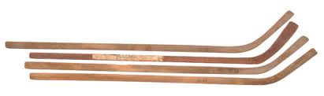
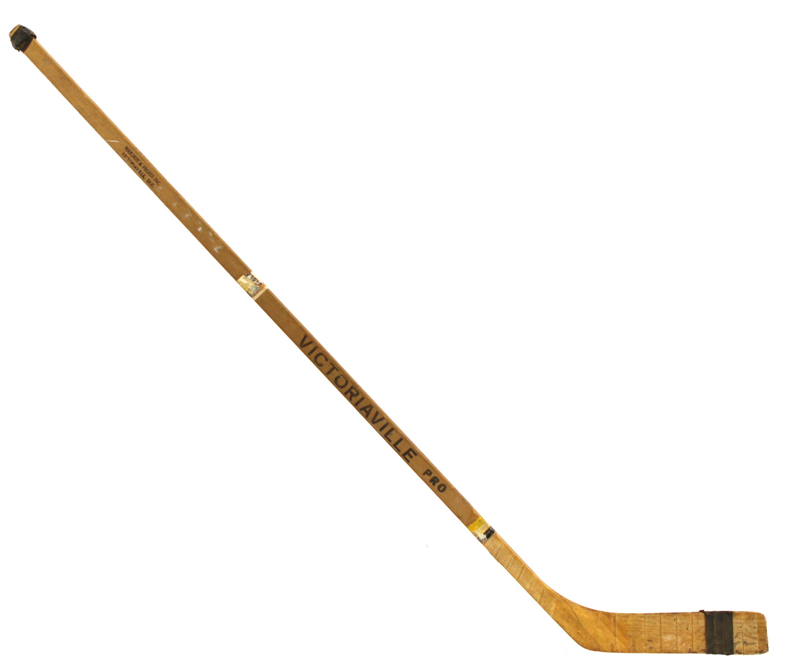
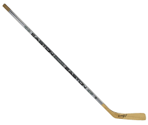
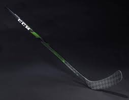

Hockey sticks started off as hand-carved wooden sticks made from birch. In the 1920s stick became two pieces with the blade being fused to the shaft. They were still made wood. Some players started would curve their own sticks, but the first recorded curved stick was in 1927 by Cy Denneny of the Ottawa Senators.

In the 1960s, hockey stick manufactures started to wrap sticks in fibreglass. This made them lighter, more durable, and cheaper to produce. Bobby Hull popularized stick curves. However, it still was done by hand and blades came from the manufacture straight.

In the 1980s sticks started to be made of aluminum. These sticks were more durable and lighter than wooden sticks. They were popularized by Wayne Gretsky in the 1990s. Sticks were still two pieces. In 1995, the first composite blade was made. These blades were lighter, flexible, but because of the flexible properties, composite blades were known to break.

In 2000, Easton created the first one-piece hockey stick and shots became harder, more accurate, and more deceptive. Today top of the line sticks are below 400g, every company has multiple lines of sticks for different players. The kick points vary from each line, allowing for different types of shots. Players can even choose the chape of the shaft for their stick. Now sticks come from the manufacture with all types of different curves and grips.
